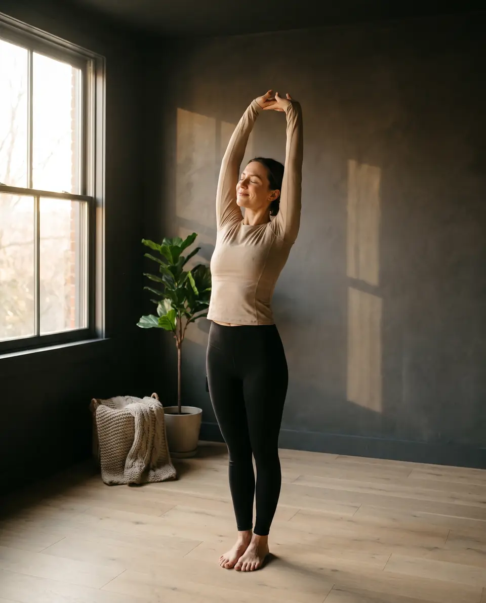
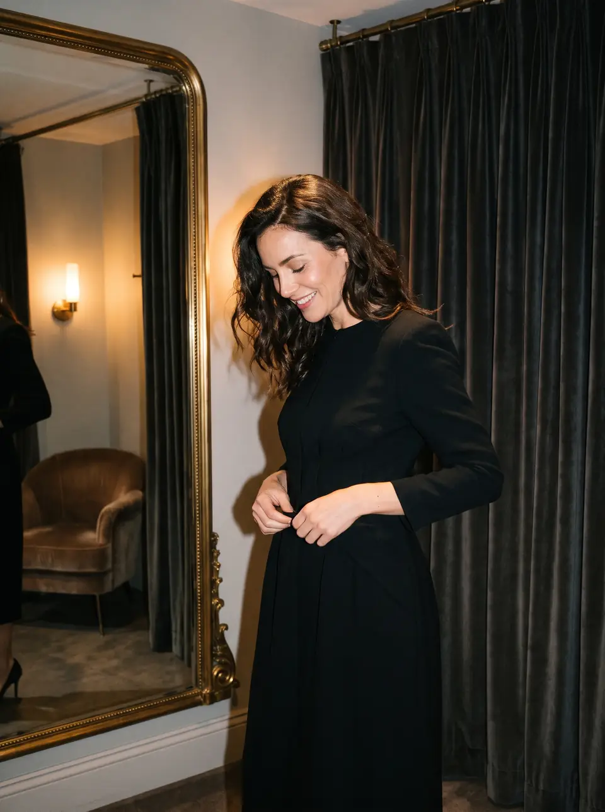
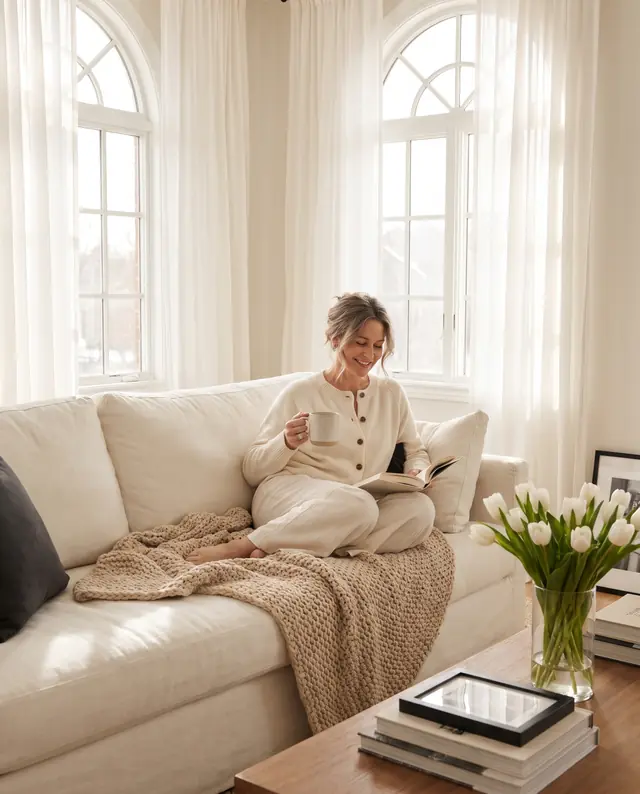
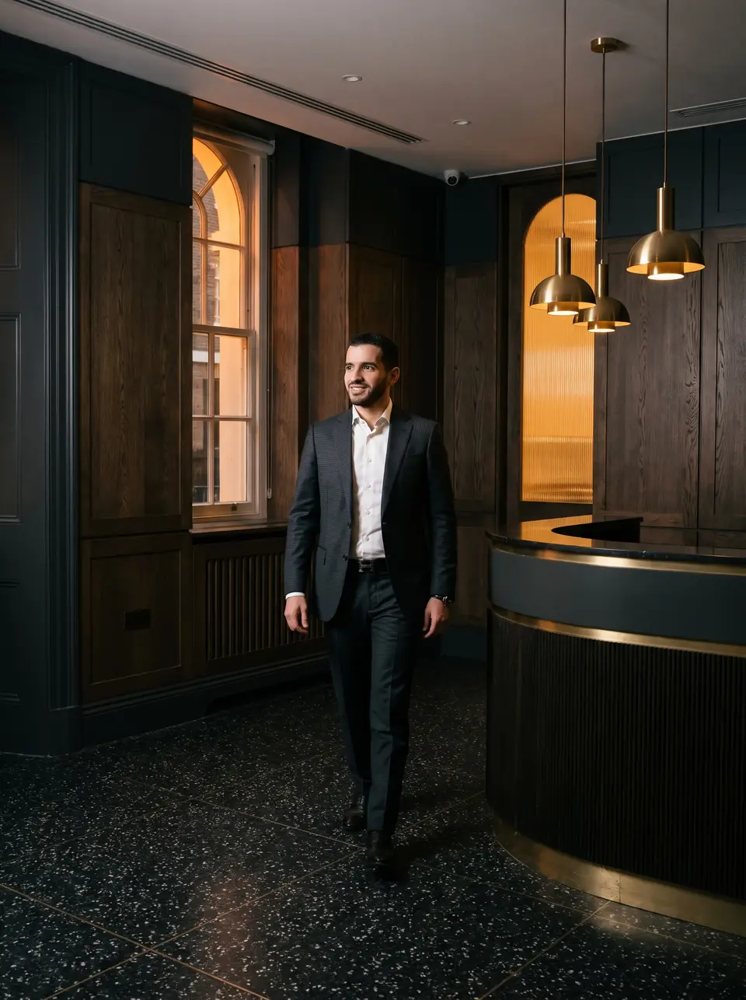
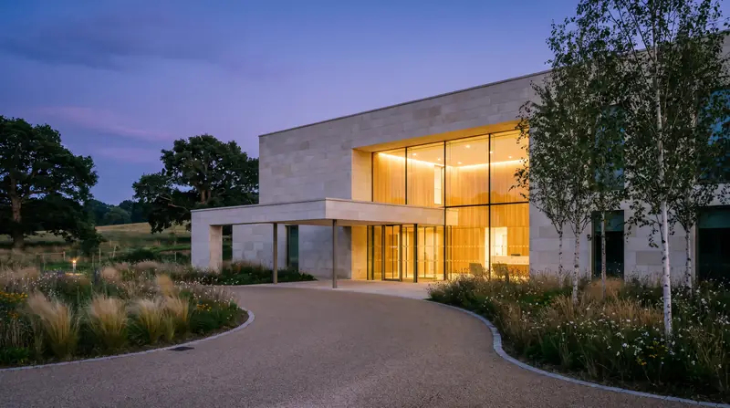

Consultation
£[TBC]
A full assessment with Mr Khatib in London or Hertfordshire.
- Time to talk through your concerns
- Examination and measurements
- Honest advice on suitability
Breast reduction surgery in London & Hertfordshire
Consultant-led reduction mammoplasty with Mr Manaf Khatib, to ease the strain of heavy breasts and bring your shape back into proportion.
Patient reviews
Do your bra straps leave grooves in your shoulders? Does your back ache by mid-afternoon, and is finding a top that fits a project in itself? Breast reduction removes the weight behind it and reshapes your breasts to sit in proportion with your frame. Many women say the first thing they notice is how light they feel. Then comes standing taller, moving freely and dressing for yourself again.
Talk to Mr KhatibBefore & after
Real patients of Mr Khatib. Drag the gold handle to reveal each result.
All photos show real, unedited patients of Mr Manaf Khatib and are displayed with their permission. Results vary from person to person, and your own outcome will be discussed honestly at consultation.
What it can do for you
Reduction mammoplasty is first about comfort and function. A shape that suits your body follows from that.

Run, swim or stretch without holding yourself in place.
Less weight pulling forward means less strain through the upper body by the end of the day.

Shop for your size, not around your bust.
Stand and sit taller once the load is lifted.
Less rubbing, sweating and rashes in the fold beneath the breast.
Lifted, balanced breasts that suit your frame.
Wondering what it could change for you?
Book your consultationSuitability
Every recommendation follows a full clinical assessment, including measurements and skin quality. If surgery is not right for you, Mr Khatib will say so.
Is this right for you?
Tick anything that sounds familiar.
Tick what applies to you.
Sounds like you? Book a consultationHow it works
Breast reduction removes excess tissue and skin, reshapes the breast and moves the nipple to a natural height while keeping its blood supply. Your technique is chosen for your anatomy, never a template.
The most widely used approach for larger reductions. The incision runs around the areola, straight down to the breast fold and along the fold itself, which allows the most skin and tissue to be removed and the breast to be lifted.
The nipple is moved up on a pedicle of living tissue, preserving its blood supply and, where possible, its sensation.
For moderate reductions, the scar can often be limited to a ring around the areola and a single vertical line beneath it, with no scar along the fold.
Which pattern suits you depends on your breast size, skin quality and the change you want. Mr Khatib will explain his reasoning at consultation.
Instead of removing all the lower tissue, some of your own tissue is kept and repositioned higher up. This restores fullness to the upper breast without an implant.
It often suits women whose breasts have lost volume at the top after pregnancy or weight change.
Fullness at the sides of the chest and under the arms can make a reduction look less complete. Liposuction can be added to refine the outline during the same operation.
It is planned only where it will make a real difference to your result.
Your treatment journey

An unhurried appointment with Mr Khatib himself. He listens to your symptoms and goals, examines and measures, and talks through scar patterns, risks and recovery so you can decide with clear information.
You receive a personalised surgical plan and a clear quote with no hidden extras. Take the time you need. There is no pressure to book.
Performed under general anaesthetic in an accredited hospital in London or Hertfordshire, taking around two to two and a half hours. Most women go home the same day.
Expect tightness, swelling and discomfort rather than severe pain, managed with prescribed medication. You wear a supportive compression bra from the start.
Your wounds are checked and dressings reviewed. Many people feel noticeably more comfortable by now.
Gentle exercise can begin, and most people return to work within one to two weeks depending on their job.
Your compression bra can usually come off and moderate exercise can resume. Mr Khatib reviews your healing in person.
Back to full activity. Your shape keeps settling and scars soften over the coming months, with reviews at 3 months, 1 year and yearly after that.
Patient story
“Breast reduction changed my life. I wish I had done it sooner.”
Filmed a few hours after surgery, as she sees her new shape for the first time. Shared with her permission.

Why choose Mr Khatib
An honest opinion, including when surgery is not the answer. No sales pressure, ever.
One of few plastic surgeons in the UK to have passed both the UK and European board examinations.
Incisions are carefully planned and closed to keep scars as discreet as possible.
Clear information on risks, results, recovery and cost, from the first appointment onwards.
BAPRAS/BAAPS aesthetic fellow at the Cadogan Clinic, with further fellowships at the Wellington, Guy's and St Thomas' and the Royal Marsden.
You see Mr Khatib at consultation, in theatre and at every follow-up, not a rotating team.
Meet your surgeon
A breast reduction surgeon in London and Hertfordshire who believes the best result starts with an honest conversation.
Mr Khatib qualified from St George's, University of London in 2010 with a distinction, and completed a Master's in Surgical Sciences with distinction at the University of Edinburgh. He trained in plastic surgery at Cambridge University Hospital, the Lister Hospital, Norfolk and Norwich and the St Andrew's Centre for Plastic Surgery.
In 2020 he was awarded the BAPRAS/BAAPS aesthetic surgery fellowship at the Cadogan Clinic, followed by a second aesthetic fellowship at the Wellington Hospital and microsurgery fellowships in breast reconstruction at Guy's and St Thomas' and the Royal Marsden.
His NHS practice is at the Lister Hospital in Stevenage, and he sees private patients in Chelsea, Marylebone, St John's Wood, Harpenden and Hatfield.
Talk to Mr KhatibMr Manaf Khatib
MBBS (Distinction) MSc (Distinction) MRCS FRCS(Plast) FEBOPRAS
Pricing
Your exact fee depends on the technique, hospital and aftercare you need. You will always receive a written quote before deciding.
£[TBC]
A full assessment with Mr Khatib in London or Hertfordshire.
Most requested
from £[TBC]
Reduction mammoplasty with nipple repositioning.
from £[TBC]
Reduction combined with reshaping, lift or liposuction where needed.
Finance options are available through our partner hospitals, including the Cadogan Clinic, Spire Harpenden and One Hatfield Hospital. Ask us about spreading the cost when you enquire.
Many women can still breastfeed after a breast reduction because the nipple stays attached to the underlying tissue, but it cannot be guaranteed and milk supply may be reduced. If you plan a family, tell Mr Khatib so he can factor it into your plan.
The technique aims to preserve blood supply and sensation wherever possible. Some women notice reduced or altered sensation, which often improves over months, and a small number find it permanent. This is discussed openly at consultation.
NHS funding for breast reduction is very limited and depends on strict local criteria, with long waits where it is offered. This page is about private surgery, which lets you choose your surgeon, timing and hospital.
Pregnancy and breastfeeding can change breast size and shape again, so some women prefer to wait. Others choose not to put relief on hold. There is no single right answer and Mr Khatib will help you weigh it up.
Cup sizes vary between brands, so the goal is described in terms of proportion and comfort rather than a letter. You will discuss the size and shape that suits your frame, and what is safely achievable for your anatomy.
Results are long lasting. Your breasts will still change with age, hormones and weight, so keeping a stable weight helps you keep your result.
You will get written aftercare instructions. As a general guide, most people can drive once they can wear a seatbelt comfortably and make an emergency stop, often after one to two weeks, and are advised to sleep on their back for the first few weeks.
No referral is needed to book a private consultation. We may ask for permission to contact your GP about your medical history, as part of safe surgical planning.
Locations
Choose the hospital that suits you. Consultations, surgery and follow-ups are all led by Mr Khatib.

HatfieldLocation photographs are illustrative of each area.
Book a consultation
Tell us a little about yourself and our team will call you back to arrange a consultation in London or Hertfordshire.
Your request is with our team. We will call you within one working day to find a consultation time that suits you.
Prefer to talk now? Call 020 3475 0840